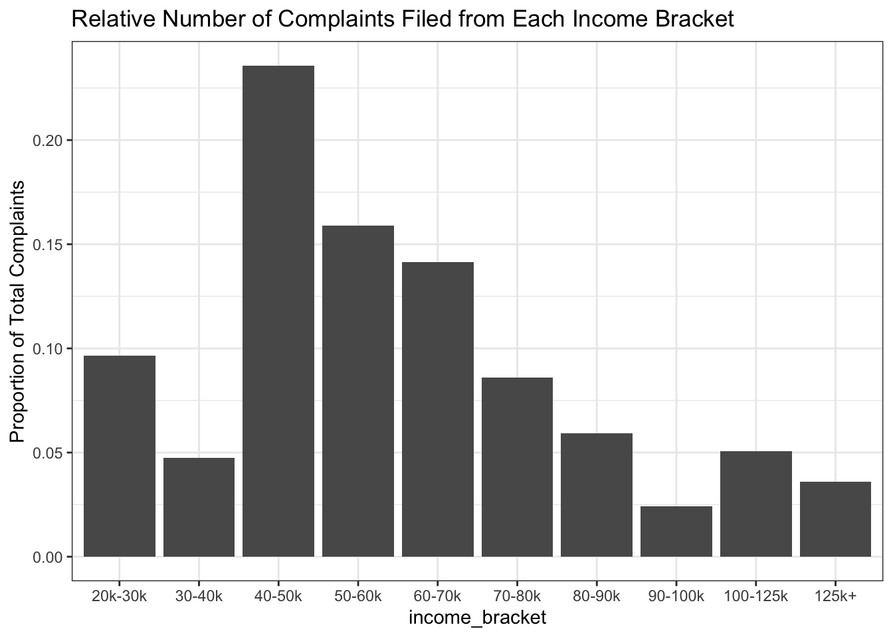
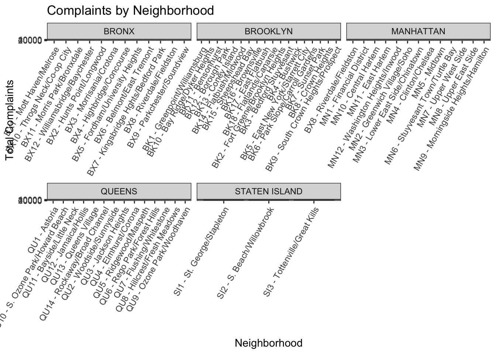
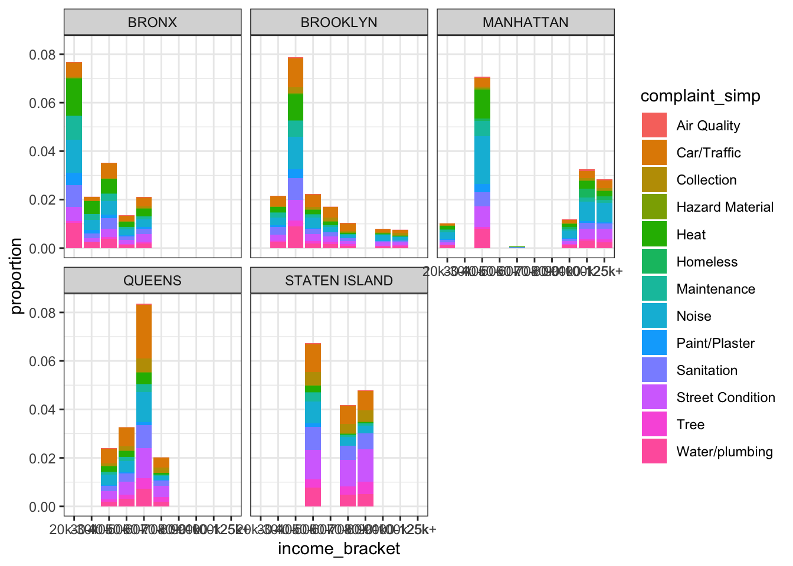
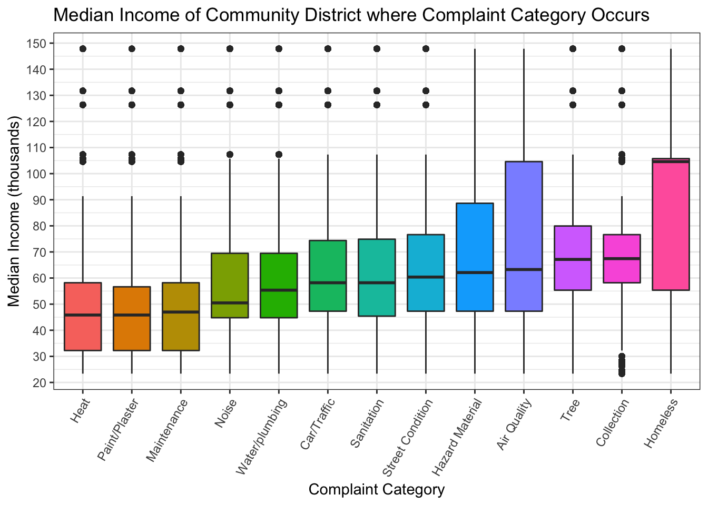
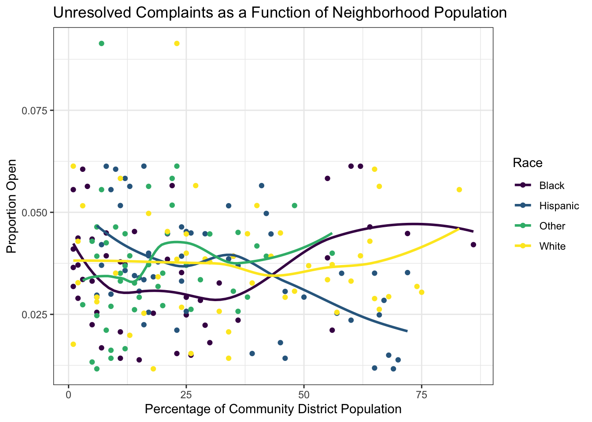
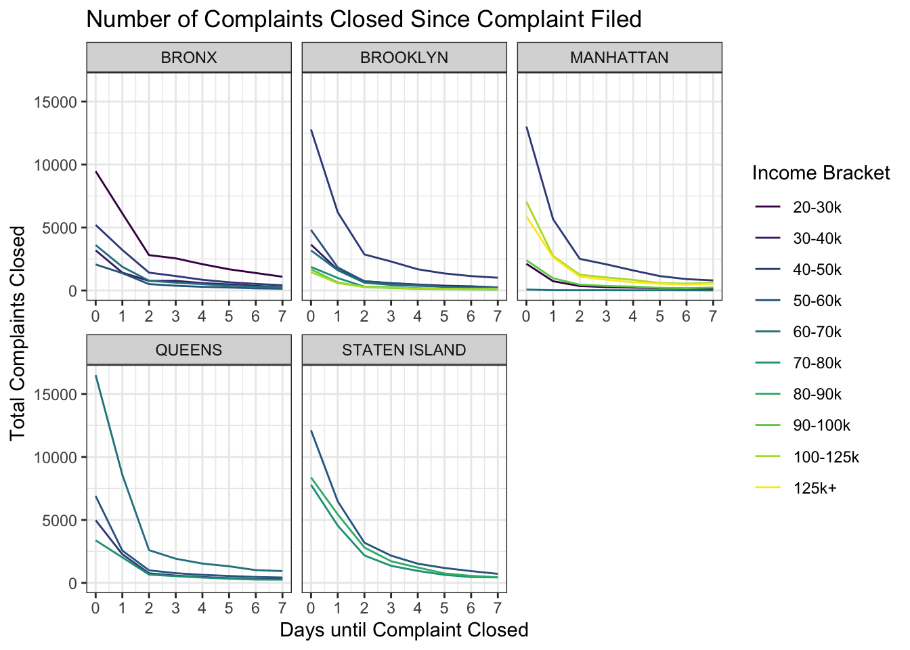

We first wanted to consider if there were differences in the number, type, or status of complaints across each neighborhood.
nyc_plots %>%
select(area_name, borough, complaint_simp, open_complaint) %>%
group_by(area_name, borough, complaint_simp, open_complaint) %>%
summarize(n = n()) %>%
pivot_wider(names_from = open_complaint, values_from = n) %>%
rename(closed = `0`,
open = `1`) %>%
mutate(proportion_open = open/(open + closed),
total = (open + closed)) %>%
filter(!is.na(area_name), !is.na(total), !is.na(complaint_simp)) %>%
ggplot(aes(x = area_name, y = total, fill = complaint_simp)) +
geom_col() +
facet_wrap(~borough, scales = "free_x") +
theme(axis.text.x = element_text(angle = 75, hjust = 1)) +
xlab("Neighborhood") +
ggtitle("Total and Type of Complaints Across Neighborhoods") +
ylab("Total Complaints") +
labs(fill = "Complaint Type") +
scale_fill_viridis(discrete = TRUE)
Looking at the total and type of complaint shows Inwood/Washington Heights to have a much greater number of complaints compared to the rest of Manhattan, many of which are related to Noise, Heat, Water/Plumbing, and Trees (possibly because of Inwood Park). Many more complaints are made in the “safer” area of the Bronx near the VA hospital, Fordham University, and Van Cortland Park (Highbridge/Concourse, Fordham/University Heights, Kingsbridge Heights/Bedford Park). More complaints are raised in St. George/Stapleton in Staten Island than other areas because it is a more populated area of the island in addition to being the more affluent area of the island.
We next considered how many of the total complaints in each neighborhood have been closed.
nyc_plots %>%
select(area_name, borough, complaint_simp, open_complaint) %>%
group_by(area_name, borough, complaint_simp, open_complaint) %>%
summarize(n = n()) %>%
pivot_wider(names_from = open_complaint, values_from = n) %>%
rename(closed = `0`,
open = `1`) %>%
mutate(proportion_open = open/(open + closed)) %>%
filter(!is.na(area_name), !is.na(proportion_open), !is.na(complaint_simp)) %>%
ggplot(aes(x = area_name, y = proportion_open, fill = complaint_simp)) +
geom_col() +
facet_wrap(~borough, scales = "free_x") +
theme(axis.text.x = element_text(angle = 75, hjust = 1)) +
xlab("Neighborhood") +
ggtitle("Proportion and Type of Complaints that are Open per Neighborhood") +
ylab("Proportion Open") +
labs(fill = "Complaint Type") +
scale_fill_viridis(discrete = TRUE)
The above plot demonstrates that the highest proportion of open cases are complaints involving a tree. Air Quality and Car/Traffic are also addressed less than other complaints across all neighborhoods. Notably, Hazard Material complaints remain unaddressed in Morrisania/Crotona, Rockaway/Broad Channel and Coney Island. Depending on the neighborhood, Homeless complaints are typically left open.
Because we saw a difference in the number of complaints and open complaints across each neighborhood, we wanted to understand how complaints are distributed based on income_bracket.
p <- nyc_plots %>%
filter(!is.na(income_bracket)) %>%
group_by(income_bracket, borough, open_complaint) %>%
summarize(n = n()) %>%
pivot_wider(names_from = open_complaint, values_from = n) %>%
rename(closed = '0',
open = '1')
p %>% mutate(proportion = (open/(open + closed))) %>%
ggplot(aes(x = income_bracket, y = proportion, fill = income_bracket)) +
geom_col() +
facet_wrap(~borough, scales = "free_x") +
ggtitle("Proportion of Open Cases Within Each Income Bracket") +
xlab("Income Bracket") +
ylab("Proportion Open") +
theme(axis.text.x = element_text(angle = 60, hjust = 1)) +
scale_fill_viridis(discrete = TRUE) +
labs(fill = "Income Bracket")
Surprisingly, across all boroughs (except Brooklyn) the proportion of open cases is greater in higher income groups compared to lower income groups.
We found the total number of cases per income bracket reflected the economic distribution of each neighborhood and was not informative as to which group filed the most complaints. As such, we did not include this plot.
Given the difference in the proportion of health complaints across income brackets, we wanted to further investigate what incomes are associated with a given complaint.
nyc_plots %>%
filter(!is.na(median_income),
!is.na(complaint_simp)) %>%
# mutate(complaint_simp = fct_reorder(complaint_simp, median_income)) %>%
ggplot(aes(x = complaint_simp,
y = (median_income/1000),
fill = complaint_simp)) +
geom_boxplot() +
theme(axis.text.x = element_text(angle = 60, hjust = 1),
legend.position = "none") +
scale_y_continuous(breaks = scales::pretty_breaks(n = 10)) +
ylab("Median Income (thousands)") +
xlab("Complaint Category") +
ggtitle("Median Income of Community District where Complaint Category Occurs") +
scale_fill_viridis(discrete = TRUE)
This plot demonstrates that neighborhoods with higher median incomes file more complaints relating to Homeless. Neighborhoods with lower median incomes file more complaints related to Heat, Maintenance, and Paint/Plaster.
One initial question we wanted to address was whether or not the status of complaints was more readily addressed given population characteristics of a neighborhood.
The following is a plot of the proportion of cases that are open given the racial percentage of a community district.
r <- nyc_plots %>%
pivot_longer(cols = per_black_nh:per_other, names_to = "race", values_to = "percent_pop") %>%
filter(!is.na(race),
!is.na(percent_pop)) %>%
group_by(race, borough, percent_pop, open_complaint) %>%
summarize(n = n()) %>%
pivot_wider(names_from = open_complaint, values_from = n) %>%
rename(closed = '0',
open = '1')
r %>% mutate(proportion = (open/(open + closed))) %>%
ggplot(aes(x = percent_pop, y = proportion, color = race)) +
geom_point() +
geom_smooth(se = FALSE) +
xlab("Percentage of Community District Population") +
ylab("Proportion Open") +
ggtitle("Unresolved Complaints as a Function of Neighborhood Population") +
scale_color_viridis(name = "Race", labels = c("Black", "Hispanic", "Other", "White"), discrete = TRUE)
The only trend we were able to discern is a decrease is the proportion of open cases as the percent hispanic population increases.
We were also curious whether the income bracket of a neighborhood affected the number of days until a complaint was closed.
nyc_plots %>%
filter(status == "Closed") %>%
mutate(closed_year = as.numeric(closed_year),
closed_month = as.numeric(closed_month),
closed_day = as.numeric(closed_day)) %>%
filter(closed_year != 2047) %>%
mutate(diff_year = abs(closed_year - created_year),
diff_month = abs(closed_month - created_month),
diff_day = abs(closed_day - created_day),
diff_dayt = abs(diff_year*365 + diff_month*30 + diff_day)) %>%
select(income_bracket,
median_income,
borough,
diff_dayt,
diff_year,
diff_month,
diff_day) %>%
filter(diff_dayt <= 7,
!is.na(income_bracket)) %>%
group_by(borough, income_bracket, diff_dayt) %>%
summarize(n = n()) %>%
ggplot(aes(x = diff_dayt, y = n, group = income_bracket, color = income_bracket)) +
geom_line() +
facet_wrap(~borough, scales = "free_x") +
scale_x_continuous(breaks = scales::pretty_breaks(n = 7)) +
scale_color_viridis(discrete = TRUE) +
xlab("Days until Complaint Closed") +
ylab("Total Complaints Closed") +
ggtitle("Number of Complaints Closed Since Complaint Filed") +
labs(color = "Income Bracket")
Looking at the total number of complaints largely reflects a difference in the total number of complaints filed by each group. We then looked at the proportion of complaints closed per day within an income bracket.
d <- nyc_plots %>%
filter(status == "Closed") %>%
mutate(closed_year = as.numeric(closed_year),
closed_month = as.numeric(closed_month),
closed_day = as.numeric(closed_day)) %>%
filter(closed_year != 2047) %>%
mutate(diff_year = abs(closed_year - created_year),
diff_month = abs(closed_month - created_month),
diff_day = abs(closed_day - created_day),
diff_dayt = abs(diff_year*365 + diff_month*30 + diff_day)) %>%
select(income_bracket,
median_income,
borough,
diff_dayt,
diff_year,
diff_month,
diff_day) %>%
filter(diff_dayt <= 7,
!is.na(income_bracket)) %>%
group_by(borough, income_bracket, diff_dayt) %>%
summarize(n = n()) %>%
pivot_wider(names_from = diff_dayt, values_from = n) %>%
rename(day0 = `0`,
day1 = `1`,
day2 = `2`,
day3 = `3`,
day4 = `4`,
day5 = `5`,
day6 = `6`,
day7 = `7`)
d$total <- d %>%
ungroup() %>%
select(starts_with("day")) %>%
rowSums(.)
d %>%
pivot_longer(cols = day0:day7, names_to = "day", values_to = "day_total") %>%
mutate(day = recode(day, day0 = 0, day1 = 1, day2 = 2, day3 = 3, day4 = 4, day5 = 5, day6 = 6, day7 = 7),
proportion = day_total/total) %>%
ggplot(aes(x = day, y = proportion, group = income_bracket, color = income_bracket)) +
geom_line() +
facet_wrap(~borough, scales = "free_x") +
scale_x_continuous(breaks = scales::pretty_breaks(n = 7)) +
scale_color_viridis(discrete = TRUE) +
xlab("Days until Complaint Closed") +
ylab("Proportion Complaints Closed") +
ggtitle("Proportion of Complaints Closed Since Complaint Filed") +
labs(color = "Income Bracket")This revealed no difference in the number of days to close a complaint given the income bracket of a neighborhood.